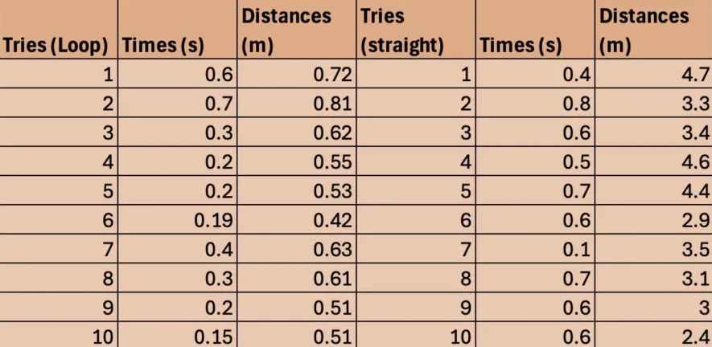

Galileo, Victoria, Alyona, Jackson
2-22-25
(graphics are a no longer really working in progress)
The goal of this lab was to figure out how hight we needed to make the descent of a hot wheel roller coaster in order for the little car to successfully loop a loop. We used our knowledge of kinematics and new information about conservation of energy in order to attempt and prove our hypothesis that the car will go further when the loop de loop is not part of its journey.
Pertinent Formulas/Laws:
Etot,initial = Etot,final
PEi + KEi= PEf + KEf
*Beginning at rest, KEi = 0*
mgh1 = mgh2 + 1/2mv2
v2 = gr
Fc = mv2/r
Fc = mg
mg = mv2/r
mgh1 = mgh2 + 1/2mv2
mgh1 = mgh2 + 1/2m(gr)
h1 = 2r + 1/2 (r)
h2 = 2r
h1 = 2.5(r)
In addition, you will need the formula from projectile motion:
x = (vlaunch*cos) * t
And:
= tan-1(height of ramp/length of base of ramp)
After Gali held up the hot wheels structure helpfully and reliably and Yona did her best but not quite enough to drop the car itself(thankfully Gali is multipurpose and was able to drop the car too)

As seen in the calculations, the final lightbulbs of energy we ran was about 5 and about 1/10th of a peanut
Possible errors could include timing with stopwatches which could be fixed by an automatic release system or Tori just getting really lucky. Another main issue could be the fact that the stairs were bent and we kind of had to slow down at some points, or just the fact we were rushing at all which created a lack of realism. This could be fixed by timing a diverse range of random people in a better stairway.
In conclusion, I seem to have grossly overestimated how much effort goes into walking up the stairs in terms of peanuts and slightly underestimated in terms of lightbulbs. The ability to measure how much energy something uses indirectly though for example in terms of a remote robot rover or just a hike could be useful to plan how much fuel you are going to supply. I really am surprised by how few calories I burned. Does my maintenance caloric intake really make up such a great part of my energy? If it does, why can't I go up the stairs for hours? An hour would theoretically only burn about 60 peanuts which I easily surpass in a day.